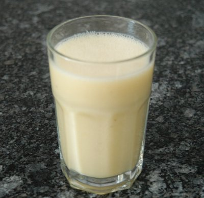

| Für 3 Gläser à 2.5dl | |
| 1 | Banane |
| 1 | Birne |
| 1 Flasche | Michel Take it Easy (3.3dl) |
| 1 Flasche | Michel Williamsbirne (2dl) |
| 2 dl | Buttermilch Nature |
Banane und Birne schälen und würfeln. Sofort mit den restlichen Zutaten pürieren und in Gläser füllen.
Michel Werbebroschüre, 2004
RE 15 Aug 2009 Schmeckt sehr gut.
@LINKBACK_TAG@ @WAKELOCK@